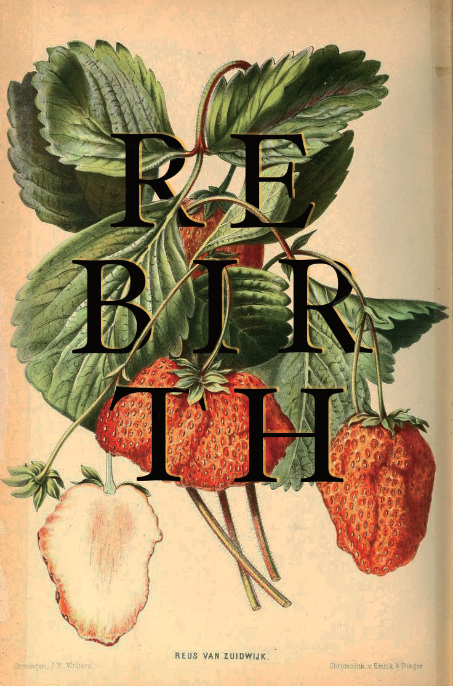
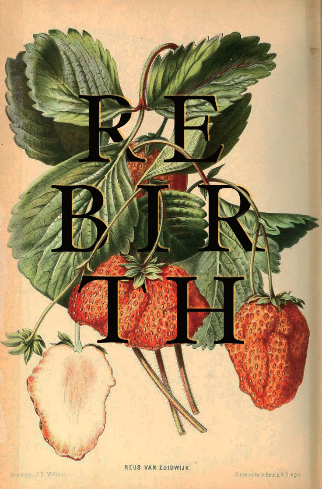

Created high fidelity mockups of an iPad kiosk ordering application for a bubble tea restaurant called Unicorn Bubbles.

Built a website which displays useful, up-to-date course information using data retrieved from the University of Michigan database of courses and course information using the U-M schedule API. View full site here.
Evaluated Yelp’s website to determine how well it meets its goals and user needs. Collected and analyzed feedback through interviews and a series of UX research methods.
Wrote a program that retrieves recent posts on tumblr from a single user to determine the periods of time they are most active on tumblr.
Various projects created for my graphic design class using Adobe Photoshop and Illustrator.
 
